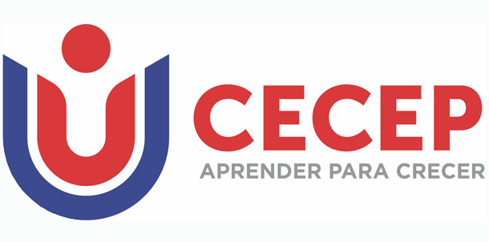

Formación Académica

Universitaria:
Universidad Icesi – Ingeniería de Sistemas, (IX) SemestreReconocimientos Académicos:
- Beca Talento TI
- Cuadro de honor con beca I semestre
- Cuadro de honor I, II, V, VI, VII semestre
- Acta de Reconocimiento al mérito académico
- Medalla de plata competencia SENASOFT
Investigaciones y/o Publicaciones:
- Proyecto de Grado “Mejoramiento de la plataforma OPX para el proceso de definición y medición de paz del Observatorio de Paz y Convivencia”- Actualmente.

Tecnológica:
FCECEP– Tecnología en Sistemas, 2014Investigaciones y/o Publicaciones:
- • Proyecto de Grado “Análisis del uso del software libre en el desarrollo de aplicaciones” Diciembre, 2013